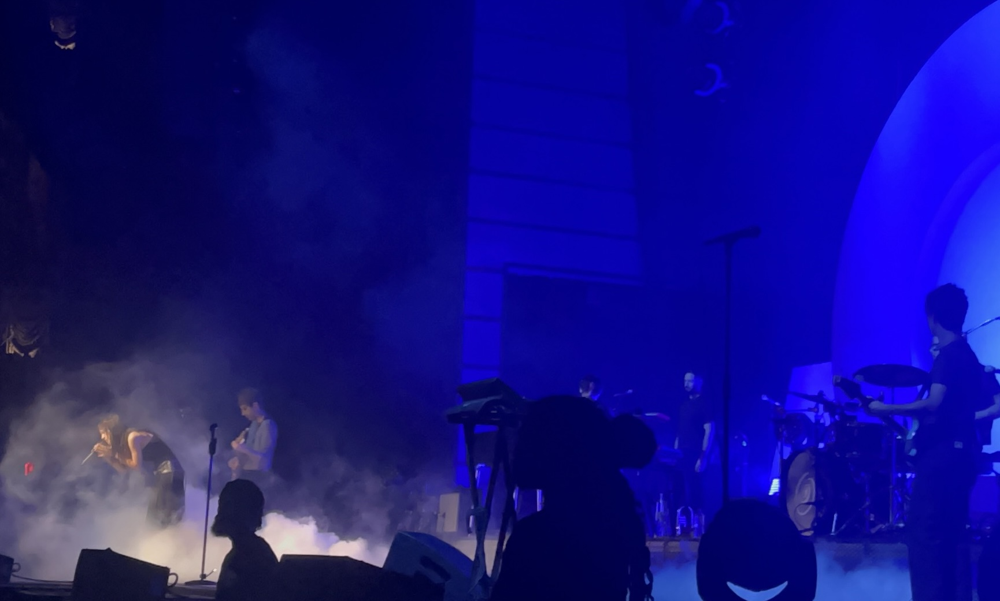
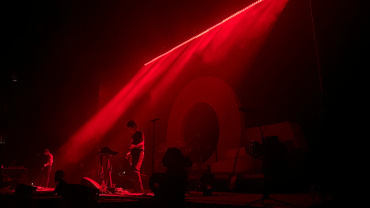

The Marías concert was one of my favorite concerts I've gone to. It was during the summer of 2024, and it was the first time I ever went to The Anthem venue. I wanted to get as close as possible, as this was one of my favorite bands, so I remember getting in line 6 hours before the concert started. Yes, it is that serious. Thankfully, my efforts weren't in vain as I was able to get an amazing view of the stage. María, the lead singer, has an amazing voice. She sang beautifully the entire show and was also very interactive with the fans. Every song that is a part of the band's discography is my favorite, but I can't lie when I say I went crazy when she started singing Otro Atardecer as it was THE song of the summer. Getting a barricade not only gave me a perfect view of the stage, but it also allowed me to meet María face to face and touch hands with everyone at the front.

Like Twenty One Pilots, I've been following The Marías for a long time. The Bedroom Pop era was popping during 2017-2019, and it's where I found artists like The Marías. Their mix of jazz and synths was encapsulating. Hearing these melodies live increased my love for the band.
